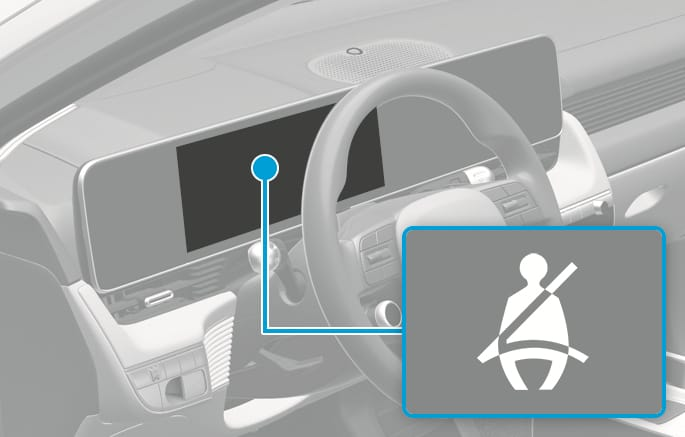
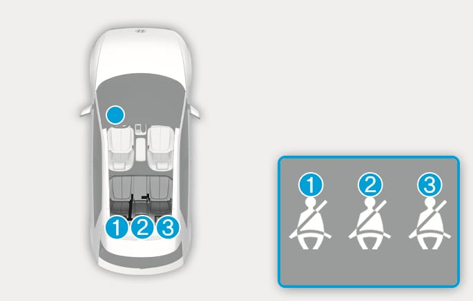

안전벨트 경고등과 경고음

2C_SeatBeltWarningLampOverview
차량의 시동을 걸면('ON') 안전벨트 착용 여부에 관계없이 운전석 및 동승석 경고등이 약 6초 동안 켜집니다.
-
운전자 및 동승자가 안전벨트를 착용하기 전까지 운전석 경 고등이 켜진 상태로 유지됩니다.
-
주행 속도가 20 km/h 이상이 되면 경고등이 깜빡이고 일정 시간 동안 경고음이 울립니다.
-
주행 중에 안전벨트를 푸는 경우 경고등 및 경고음 작동 방식은 다음과 같습니다.
-
주행 속도 20 km/h 미만: 경고등이 켜집니다.
-
주행 속도 20 km/h 이상: 경고등이 깜빡이고 일정 시간 동안 경고음이 울립니다.
-
-
운전자 및 동승자가 안전벨트를 착용하기 전까지 운전석 경고등이 켜진 상태로 유지됩니다.
-
바른 자세로 앉아 안전벨트를 착용하십시오. 탑승 자세가 바르지 않은 경우 경고등과 경고음이 정상적으로 작동하지 않을 수 있습니다.
-
탑승자가 소지한 물건이나 전자 기기의 영향으로 안전벨트 경고등 및 경고음이 작동할 수 있습니다. 이런 경우 해당 물건이나 전자 기기를 좌석 밖에 두십시오.

2C_RearSeatBeltWarningLamp
차량의 시동을 걸면('ON') 안전벨트 착용 여부에 관계없이 후석 경고등이 약 6초 동안 켜집니다.
-
뒷좌석 승객의 탑승 여부와 관계없이 안전벨트를 착용하기 전까지 운전석 경고등이 약 70초 동안 켜진 상태로 유지됩니다.
-
주행 중에 뒷좌석 안전벨트를 푸는 경우, 경고등 및 경고음 작동 방식은 다음과 같습니다.
-
주행 속도 20 km/h 미만: 약 70초 동안 경고등이 켜집니다.
-
주행 속도 20 km/h 이상: 약 35초 동안 경고등이 깜빡이고 경고음이 울립니다.
-
-
안전벨트를 착용하면 경고등이 꺼집니다.